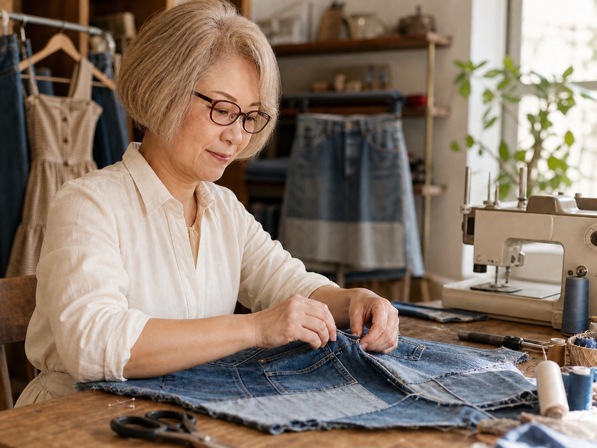

01
01OBI / KIMONO FABRIC
黒帯ポシェット3点セット
必要なものを持ち歩く、細かな持ち物を分ける
詳しく見るBAGS & TEXTILE PIECES / ONLYYUUKA
着物の柄、帯の織り、デニムの色。
選んだ布のよさを組み合わせて、
持ち歩くバッグと小物に。

THE COLLECTION — 01
バッグと布小物、そして衣類の加工。
商品ごとの写真と仕様をご覧いただけます。

ABOUT ONLYYUUKA
増田 友美 / リメイクアーティスト
onlyyuukaは、増田友美が手がけるリメイク作品のブランドです。自ら選んだ帯や着物地、デニムなどを使って、バッグや小物を制作しています。
黒帯と着物地を合わせたセット。異なる色柄の布に刺し子を施したバッグインバッグ。どの素材をどこに使うか、その選び方が作品ごとの表情になります。
onlyyuukaの出発点には、帯や着物、着られなくなった衣類に残る柄や風合いを、もう一度使えるものにしたいという思いがあります。
帯の織りを表に見せたり、着物地を内布に使ったり。素材の特徴を見ながら、使う場所や組み合わせを考え、バッグや小物に仕立てています。
気に入った柄や色の組み合わせを、持ち歩いて楽しんでもらえるように。素材のよさを活かし、使いたくなる作品を目指しています。
FIND YOUR PIECE — 04
素材やセット内容を確かめる。購入方法を知る。
掲載作品についてのご質問も、こちらから。
ショーツの素材送付・加工については、商品紹介でご案内します。